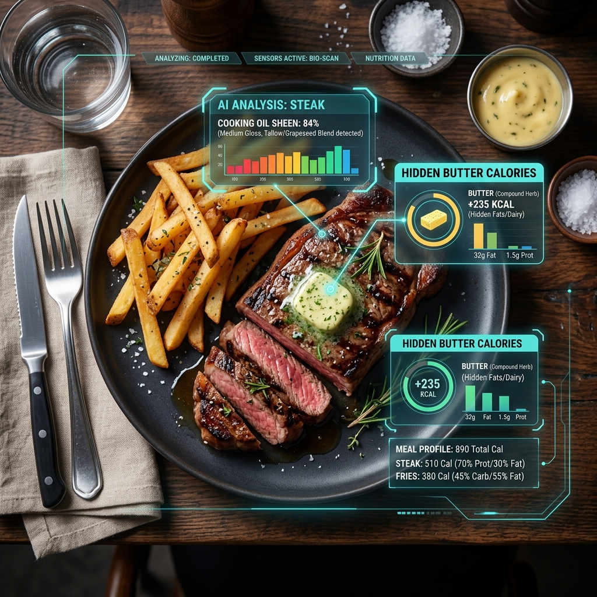

Розкриваємо приховані калорії, що гальмують ваш прогрес.

Did you know that "Steamed Vegetables" at a restaurant are often tossed in 15g of butter? Or that "Grilled Chicken" might be basted in oil? Most people fail their diets not because they eat too much food, but because they don't see the приховані кулінарні олії.
KkaloAI doesn't just identify "Chicken". It analyzes the preparation:
Dining out is the biggest challenge for weight loss. With KkaloAI's AI Визначення готування, you can finally log restaurant meals with confidence. By recognizing hidden preparation methods, KkaloAI provides a realistic calorie count that reflects the actual ingredients used, not just a generic database entry.